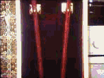
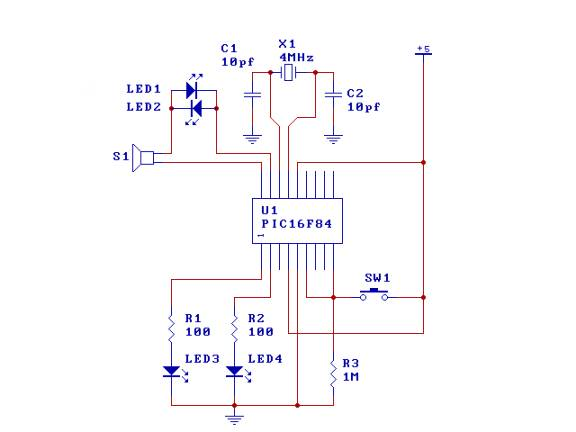
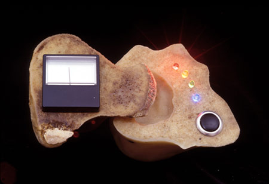

<html xmlns:v="urn:schemas-microsoft-com:vml"
xmlns:o="urn:schemas-microsoft-com:office:office"
xmlns:w="urn:schemas-microsoft-com:office:word"
xmlns="http://www.w3.org/TR/REC-html40">

<head>
<meta http-equiv=Content-Type content="text/html; charset=windows-1252">
<meta name=ProgId content=Word.Document>
<meta name=Generator content="Microsoft Word 9">
<meta name=Originator content="Microsoft Word 9">
<link rel=File-List href="./index_files/filelist.xml">
<link rel=Edit-Time-Data href="./index_files/editdata.mso">
<!--[if !mso]>
<style>
v\:* {behavior:url(#default#VML);}
o\:* {behavior:url(#default#VML);}
w\:* {behavior:url(#default#VML);}
.shape {behavior:url(#default#VML);}
</style>
<![endif]-->
<title>Welcome to DorkbotPhiladelphia</title>
<!--[if gte mso 9]><xml>
 <o:DocumentProperties>
  <o:Author>CV</o:Author>
  <o:Template>Normal</o:Template>
  <o:LastAuthor>CV</o:LastAuthor>
  <o:Revision>5</o:Revision>
  <o:TotalTime>33</o:TotalTime>
  <o:Created>2004-11-17T00:05:00Z</o:Created>
  <o:LastSaved>2004-11-17T19:05:00Z</o:LastSaved>
  <o:Pages>2</o:Pages>
  <o:Words>171</o:Words>
  <o:Characters>978</o:Characters>
  <o:Company>Spectrasonics</o:Company>
  <o:Lines>8</o:Lines>
  <o:Paragraphs>1</o:Paragraphs>
  <o:CharactersWithSpaces>1201</o:CharactersWithSpaces>
  <o:Version>9.4402</o:Version>
 </o:DocumentProperties>
</xml><![endif]-->
<style>
<!--
 /* Style Definitions */
p.MsoNormal, li.MsoNormal, div.MsoNormal
	{mso-style-parent:"";
	margin:0in;
	margin-bottom:.0001pt;
	mso-pagination:widow-orphan;
	font-size:12.0pt;
	font-family:"Times New Roman";
	mso-fareast-font-family:"Times New Roman";}
p.MsoTitle, li.MsoTitle, div.MsoTitle
	{margin:0in;
	margin-bottom:.0001pt;
	text-align:center;
	mso-pagination:widow-orphan;
	font-size:18.0pt;
	mso-bidi-font-size:12.0pt;
	font-family:Arial;
	mso-fareast-font-family:"Times New Roman";}
p.MsoBodyText, li.MsoBodyText, div.MsoBodyText
	{margin:0in;
	margin-bottom:.0001pt;
	text-align:center;
	mso-pagination:widow-orphan;
	font-size:12.0pt;
	font-family:Arial;
	mso-fareast-font-family:"Times New Roman";}
a:link, span.MsoHyperlink
	{color:blue;
	text-decoration:underline;
	text-underline:single;}
a:visited, span.MsoHyperlinkFollowed
	{color:purple;
	text-decoration:underline;
	text-underline:single;}
@page Section1
	{size:8.5in 11.0in;
	margin:1.0in 1.25in 1.0in 1.25in;
	mso-header-margin:.5in;
	mso-footer-margin:.5in;
	mso-paper-source:0;}
div.Section1
	{page:Section1;}
-->
</style>
<!--[if gte mso 9]><xml>
 <o:shapedefaults v:ext="edit" spidmax="1032"/>
</xml><![endif]--><!--[if gte mso 9]><xml>
 <o:shapelayout v:ext="edit">
  <o:idmap v:ext="edit" data="1"/>
 </o:shapelayout></xml><![endif]-->
</head>

<body lang=EN-US link=blue vlink=purple style='tab-interval:.5in'>
<div class=Section1> 
  <div align="left"> 
    <p align="center"><span style='font-size:26.0pt;mso-bidi-font-size:12.0pt'><o:p><br>
      <font face="Arial, Helvetica, sans-serif">Welcome to DorkbotPhiladelphia</font></o:p></span></p>
    <p><span style='font-size:26.0pt;mso-bidi-font-size:12.0pt'><o:p><br>
      <font size="4" face="Arial, Helvetica, sans-serif">This site is intended 
      to be a forum for people in and around Philadelphia who are interested in 
      electrical technology and the arts. <br>
      If you are interested in using electrical technology as a means or a medium 
      please subscribe to one or both of our list serves: </font></o:p></span></p>
  </div>
</div>
<blockquote>
<div class=Section1> 
    <div align="left"> 
      <p><span style='font-size:26.0pt;mso-bidi-font-size:12.0pt'><o:p><font size="4" face="Arial, Helvetica, sans-serif"> 
        For announcements, exhibits, events, opportunities, etc…<br>
        <a href="http://dorkbot.org/mailman/listinfo/dorkbotphiladelphia-announce">http://dorkbot.org/mailman/listinfo/dorkbotphiladelphia-announce</a><br>
        <br>
        </font><font size="4" face="Arial, Helvetica, sans-serif">For technical 
        questions, criticisms, calls for collaboration, reviews, and rants:<br>
        <a href="http://dorkbot.org/mailman/listinfo/dorkbotphiladelphia-blabber">http://dorkbot.org/mailman/listinfo/dorkbotphiladelphia-blabbe</a></font><a href="http://dorkbot.org/mailman/listinfo/dorkbotphiladelphia-blabber"><font size="4">r</font></a></o:p></span></p>
    </div>
  </div>
</blockquote>
<div class=Section1>
  <div align="left"><font size="3" face="Arial, Helvetica, sans-serif">Dorkbot chapters 
    in other cities have meetings, lectures, exhibitions, competitions, etc..<br>
    I’ll be happy if this site just works as a virtual means of exchanging information, 
    sharing ideas, <br>
    and generating interest in electrical technology as an aesthetic medium.<br>
    Please sign up, we’ll see how much interest there is, and go from there. </font> 
  </div>
</div>
<div class=Section1></div>
<div class=Section1> 
  <div align="left">
    <p><font size="5" face="Arial, Helvetica, sans-serif"><strong>Note:</strong></font><font face="Arial, Helvetica, sans-serif"><br>
      <strong><font size="4">It seems the guys over at <a href="http://www.makephilly.com/">MakePhilly</a> 
      have been doing alot of the same stuff that DorkBot seeks to do.<br>
      I strongly recommend subscribing to their <a href="http://groups.google.com/group/MakePhilly">email 
      list</a> and attending one of the Make meetings if you can.</font></strong></font></p>
    <p><font face="Arial, Helvetica, sans-serif"> <span style='font-size:26.0pt;mso-bidi-font-size:12.0pt'><o:p></o:p><o:p></o:p></span><strong><span style='font-family:Arial'><o:p></o:p></span></strong></font><strong><span style='font-family:Arial'><o:p></o:p></span></strong><strong><span style='font-family:Arial'><o:p></o:p></span></strong></p>
    </div>
</div>
<div class=Section1>
<p align="center" class=MsoNormal>&nbsp;</p>
  <p align="center" class=MsoNormal><span style='font-family:Arial'><a href="image002.jpg"><span
style='text-decoration:none;text-underline:none'> </span></a>  <o:p></o:p></span></p>
  <p align="center" class=MsoNormal style='tab-stops:3.5in'><span style='font-family:Arial'>Edwin 
    Armstrong<span style='mso-tab-count:1'>                                                      
    </span>A Jacobs Ladder<o:p></o:p></span></p>
  <p class=MsoNormal align=center style='text-align:center'><span
style='font-family:Arial'> <o:p></o:p></span></p>
  <p class=MsoNormal align=center style='text-align:center'><span
style='font-family:Arial'>  <o:p></o:p></span></p>
  <p class=MsoNormal align=center style='text-align:center'><span
style='font-family:Arial'>Some Circuitry<o:p></o:p></span></p>
  <p class=MsoNormal><span style='font-family:Arial'> <o:p></o:p></span></p>
  <p class=MsoNormal align=center style='text-align:center'><span
style='font-family:Arial'> <a href="http://www.noisemantra.com/"></a><o:p></o:p></span></p>
  <p class=MsoNormal align=center style='text-align:center'><span
style='font-family:Arial'><o:p></o:p></span><span
style='font-family:Arial'>Art<o:p></o:p></span></p>
  </div>

</body>

</html>
